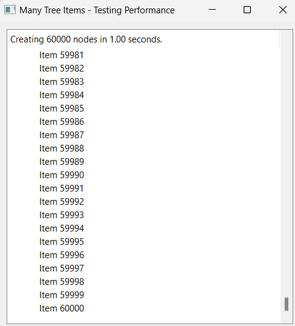

Performance Tips¶
In this chapter we will learn more about the Ring performance.
Introduction¶
Ring is designed to be a simple, small and flexible language in the first place, but also it is fast enough for many applications.
Ring can do each of the next tasks in around 1 second using normal computers in the market during the last 5 years
Compiling 100,000 lines of code
Executing empty loop that count from 1 to 10,000,000
Executing 1000 search operation using linear search in a list contains 100,000 items, trying to find the last item (The worst case)
Creating list contains 1,000,000 items then summing all of the list items
Adding 20,000 items to the ListWidget in GUI applications
Adding 5,000 nodes to the TreeWidget in GUI applications
Printing 10,000 messages to the terminal in Console applications
Also when we need more speed we can use C/C++ extensions!
Example:
? "Create list contains 100,000 items"
aList = 1:100000
? "Do 1000 search operation - Find the last item (Worst Case!)"
c = clock()
for t = 1 to 1000
find(alist,100000)
next
? "Time: " + ( clock() - c ) / clockspersecond() + " seconds"
Output:
Create list contains 100,000 items
Do 1000 search operation - Find the last item (Worst Case!)
Time: 0.87 seconds
Example:
load "guilib.ring"
func main
new qApp {
win = new qWidget() {
move(100,100) resize(500,500)
setWindowTitle("Many Tree Items - Testing Performance")
tree = new qTreeWidget(win) {
blocksignals(True) setUpdatesEnabled(False)
root = new qTreeWidgetItem()
root.setText(0,"The Root Node")
t1 = clock()
for t = 1 to 5000
oItem = new qTreeWidgetItem()
oItem.settext(0,"Item " + t)
root.addchild(oItem)
next
cTime = (clock()-t1)/clockspersecond()
setHeaderLabel("Creating 5000 nodes in " + cTime + " seconds.")
addTopLevelItem(root)
expanditem(root)
blocksignals(False) setUpdatesEnabled(True)
}
oLayout = new qVBoxLayout() {
addWidget(tree)
}
setLayout(oLayout)
show()
}
exec()
}
Output:
Creating Lists¶
Example:
? "Create the list using the Range operator"
t1 = clock()
aList = 1:1000000
? "Time : " + ((clock()-t1)/clockspersecond()) + " seconds"
? "Create the list using the For loop"
t1 = clock()
aList = []
for x = 1 to 1000000
aList + x
next
? "Time : " + ((clock()-t1)/clockspersecond()) + " seconds"
? "Create the list using the list() function and the For loop"
t1 = clock()
aList = list(1000000)
for x = 1 to 1000000
aList[x] = x
next
? "Time : " + ((clock()-t1)/clockspersecond()) + " seconds"
Output:
Create the list using the Range operator
Time : 0.48 seconds
Create the list using the For loop
Time : 0.79 seconds
Create the list using the list() function and the For loop
Time : 1.56 seconds
Note
Creating lists using the Range operator is faster than using the For loop or the list() function
Arithmetic Operations¶
Example:
? "Using * operator"
t1 = clock()
for x = 1 to 1000000
out = x * 2
next
? "Time : " + ((clock()-t1)/clockspersecond()) + " seconds"
? "Using *= operator"
t1 = clock()
for x = 1 to 1000000
out = x
out *= 2
next
? "Time : " + ((clock()-t1)/clockspersecond()) + " seconds"
Output:
Using * operator
Time : 1.34 seconds
Using *= operator
Time : 0.47 seconds
Note
Using the *= operator is faster that using the * operator
Using len() and For Loops¶
Example:
aList = 1:1000000
? "Using len() in the For loop"
t1 = clock()
for x = 1 to len(aList)
next
? "Time : " + ((clock()-t1)/clockspersecond()) + " seconds"
? "Using len() before the For loop"
t1 = clock()
nMax = len(aList)
for x = 1 to nMax
next
? "Time : " + ((clock()-t1)/clockspersecond()) + " seconds"
Output:
Using len() in the For loop
Time : 5.50 seconds
Using len() before the For loop
Time : 0.24 seconds
Note
Using len() before the For loop is faster than using len() in the For loop.
Calling Functions and Methods¶
Example:
? "calling 100000 functions"
t1 = clock()
for x = 1 to 100000
test()
next
? "Time : " + ((clock()-t1)/clockspersecond()) + " seconds"
o1 = new test
? "calling 100000 methods using the dot operator"
t1 = clock()
for x = 1 to 100000
o1.test()
next
? "Time : " + ((clock()-t1)/clockspersecond()) + " seconds"
? "calling 100000 methods using braces "
t1 = clock()
for x = 1 to 100000
o1 { test() }
next
? "Time : " + ((clock()-t1)/clockspersecond()) + " seconds"
func test
class test
func test
Output:
calling 100000 functions
Time : 0.28 seconds
calling 100000 methods using the dot operator
Time : 0.36 seconds
calling 100000 methods using braces
Time : 1.19 seconds
Note
Calling functions is faster than calling methods but the difference is very small.
Note
Using the dot operator to call methods is faster than using braces.